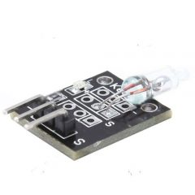
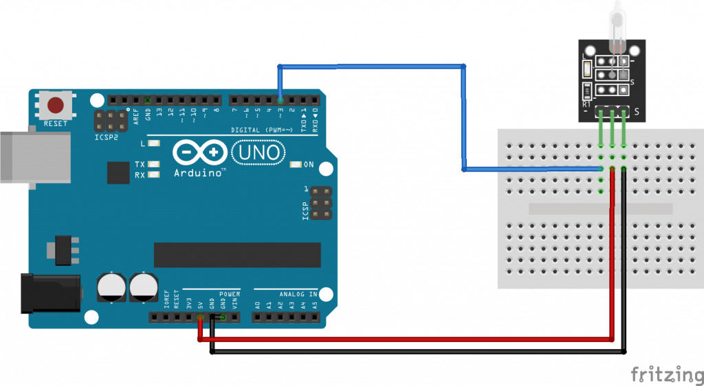

|  |
|  |
| Arduino KY-017 mercury tilt switch module, it uses a small mercury ball that completes the circuit when you tilt the module. This module consists of a mercury switch, a 680Ω resistor and a LED that will light up when tilt is detected. The mercury ball will open/close the circuit when the module is rotated. |
Codeint led_pin = 13; // Define the LED interface int switch_pin = 3; // Definition of mercury tilt switch sensor interface int val; // Defines a numeric variable void setup() { pinMode(led_pin, OUTPUT); pinMode(switch_pin, INPUT); } void loop() { val = digitalRead(switch_pin); // check mercury switch state if(val == HIGH) { digitalWrite(led_pin, HIGH); } else { digitalWrite(led_pin, LOW); } } |
| Первый Модуль Второй Модуль Source |